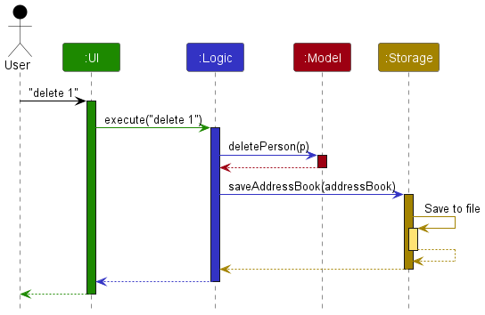
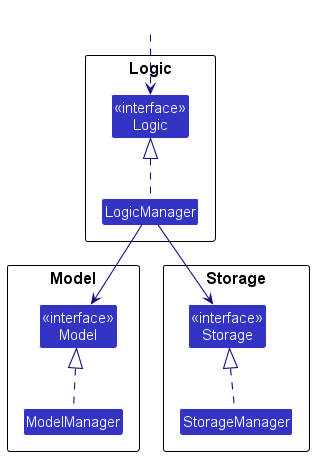
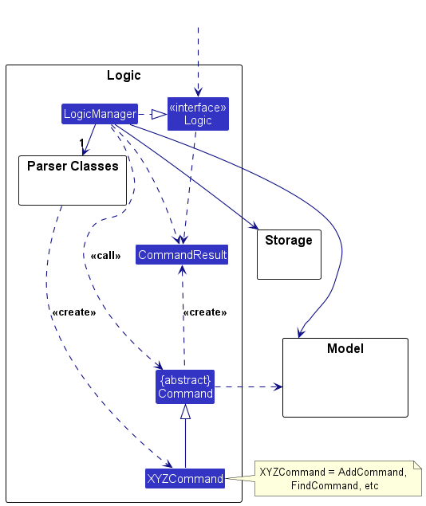
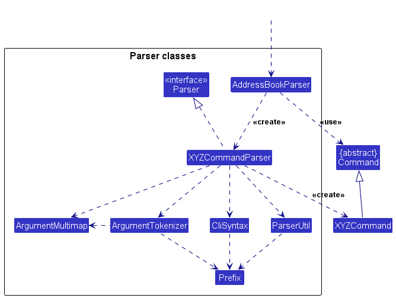
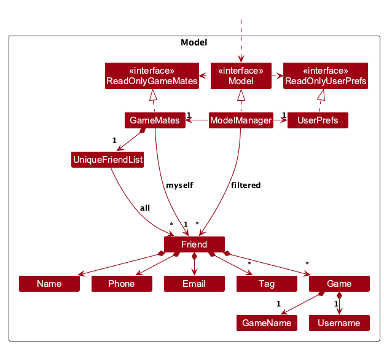
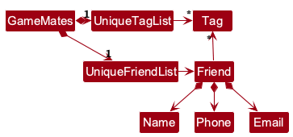
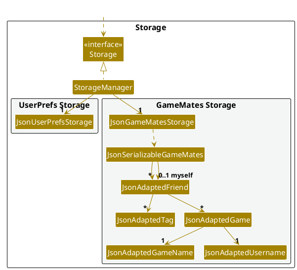

Developer Guide
- Acknowledgements
- Setting up, getting started
- Design
- Implementation
- Documentation, logging, testing, dev-ops
- Appendix: Requirements
-
Appendix: Instructions for manual testing
- Prerequisites and test isolation
- Launch, help and window settings
- Friend creation, editing, identity and tags
- Friend filters and displayed indices
- Game cards, empty states and display-filter clearing
- Deletion and clearing
- Saved profile and game round trip
- Missing, invalid and unwritable files
- Documentation preview
- Manual game edit checks
Acknowledgements
-
Vavr provides
Option,Try, and checked-function adapters for parsing, edit descriptors, and storage.
This guide distinguishes implemented behaviour from the pending MVP integration. The requirements and explicitly proposed features below describe product goals, not a claim that every goal is implemented.
Setting up, getting started
Refer to the guide Setting up and getting started.
Design
.puml files used to create diagrams are in docs/diagrams. Refer to the PlantUML Tutorial at se-edu/guides to learn how to create and edit diagrams.
Architecture

The Architecture Diagram shows the high-level design of GameMates. The following sections describe the main components and their interactions.
Application startup and shutdown
The Main component controls application startup and shutdown. It consists of
Main and
MainApp.
- At startup, this component initializes the other components in the necessary sequence and connects them.
- At shutdown, it stops the other components and calls cleanup methods where necessary.
Main components
Four components do most of the application’s work:
-
UIprovides the user interface. -
Logicexecutes commands. -
Modelholds the application data in memory. -
Storagereads data from the hard disk and writes data to it.
Commons contains classes that more than one component uses.
Component interactions
The following sequence diagram shows how the components interact when the user enters delete 1.

Each main component defines its API in an interface with the same name as the component.
A concrete {Component Name}Manager class implements that interface and provides the component’s behavior.
For example, Logic.java defines the Logic API, and LogicManager.java implements it.
Other components use the interface instead of the concrete class.
This prevents coupling to the concrete implementation.
The following partial class diagram shows this relationship.

The sections below describe each component in more detail.
UI component
The component API is defined in
Ui.java.

UI classes and layouts
The UI consists of these classes, which inherit from UiPart:
MainWindowCommandBoxResultDisplayFriendListPanelFriendDetailsPanelGameDetailsCardHelpWindowStatusBarFooter
UiPart loads the matching FXML layouts.
TagPane and TagLabel wrap tags to the available width in friend cards and the details panel.
TagPane measures wrapped labels before layout and constrains their width during layout.
TagLabel adjusts its height to keep wrapped text visible.
MainWindow.fxml uses a SplitPane. The observable friend list is on the left, and the details panel is on the right.
FriendDetailsPanel shows contact details, tags and sorted game cards. It does not replace the friend list.
The UI uses the JavaFX framework. Its .fxml layout files are in src/main/resources/view.
For example,
MainWindow.fxml
defines the layout of
MainWindow.
Component responsibilities
The UI component:
- Executes user commands through
Logicand keeps a reference to that component. - Listens for changes to
Modeldata so that the display can show those changes. - Depends on model classes because it displays
Friendobjects.
Selection and command results
FriendListPanel sends selection changes to a consumer in MainWindow.
Command-driven selection uses CommandResult.friendToShow, showMyself and gameFilter.
See Viewing games.
If a successful result has no friend payload, the details panel shows Logic.getMyself().
If find returns one friend, the details panel shows that friend.
Parse failures and command failures update feedback without an explicit details refresh.
MainWindow.refreshFriendDetails calls FriendListPanel.selectFriend() before it sets the final details payload.
Friend payloads select the matching displayed friend; profile payloads and results without a friend clear the selection.
If the target is not displayed, selectFriend() also clears the selection.
Mouse selection remains supported, and a previous friend can be selected again after a command shows the profile.
A game filter changes only the cards that the panel renders. The filter does not change the model or the predicate for the left-hand friend list.
Logic component
API: Logic.java
The following partial class diagram shows the Logic component.

The sequence diagram shows the interactions for the API call execute("delete 1").

DeleteCommandParser lifeline is intended to end at the destroy marker (X).
A PlantUML limitation makes it continue to the end of the diagram.
Command execution
LogicManager.execute(commandText) follows this sequence:
-
LogicManagerpasses the command text to aGameMatesParserobject. This object creates a matching parser instance, such as aDeleteCommandParser, and uses it to parse the command. - The parser creates an instance of a
Commandsubclass, such asDeleteCommand.LogicManagerexecutes that command object. - The command communicates with
Modelas necessary, for example to delete a friend. The diagram shows one interaction for simplicity. The code can use more than one interaction to complete the operation. - The command creates a
CommandResult.LogicManagerobtains the data throughModel.getGameMates(). Before it returns the result to theUI,LogicManagersaves the completeReadOnlyGameMatesthroughStorage.
Viewing commands also save data. Parse failures and execution failures skip the save.
If an I/O error occurs after execution, LogicManager reports a CommandException.
It does not roll back the change in memory.
Command parsing
The following diagram shows the parsing classes omitted from the class diagram above.

GameMatesParser creates an instance of an XYZCommandParser, where XYZ represents the command name.
Each parser uses the shared parsing classes to create an instance of its XYZCommand class.
For example, AddCommandParser creates an AddCommand object.
GameMatesParser returns the result as a Command object.
All command parsers implement the Parser interface, including AddCommandParser and DeleteCommandParser.
This interface lets callers use the parsers in the same way, for example in tests.
Optional values
Command parsers and edit descriptors use Vavr Option to represent omitted values.
A missing prefix is absent. A prefix with an empty value is present and must pass validation.
Add commands use Phone.EMPTY and Email.EMPTY for omitted contact details.
Edits preserve omitted fields. A single empty t/ clears the tags.
Descriptor setters make defensive copies of tag sets, and their getters return unmodifiable sets.
Parsing reports the first invalid value through ParseException.
Vavr’s checked-function adapters propagate the original exception.
Thus, an invalid value is not treated as an omitted argument.
GameAddCommandParser uses Username.EMPTY when u/ is omitted.
It rejects a supplied blank u/.
Quoted values
ArgumentTokenizer lets users wrap a whole value in double quotes. Prefixes inside the quotes are literal text,
so g/"PUBG n/Game" gives PUBG n/Game.
- A value is quoted when its first character after trimming is
". Its content is trimmed like any value. - In any value,
\"is a literal". Only the backslash right before a quote is removed, so\\"gives\". - A quoted value cannot end with
\right before the closing quote, since\"is read as a literal". Users add a space before the closing quote instead, which trimming removes. - A bare
"in an unquoted value, a missing closing quote or text after the closing quote throws aParseException. Each case has its own message. - Only straight quotes
"are supported. Other quotes such as curly quotes“ ”do not start or end a quoted value. They are kept as normal text. - The preamble is not parsed for quotes.
Model component
API: Model.java

Stored data and views
The Model stores friends in GameMates through UniqueFriendList.
It stores a separate Friend myself profile with a default value. The profile is not part of the friend list.
Add and edit commands prevent a friend and the profile from sharing a name.
A FilteredList<Friend> provides an observable view of the stored friends.
Its predicate operates on the full collection; the filter does not create a second collection of copied friends.
FriendListScope identifies active, archived and global search views, including empty results.
ModelManager exposes a SortedList over this filtered list to apply the display order.
Each friend’s games are Game objects. Each object contains a game name, an optional username and optional metadata.
The Model also stores a UserPrefs object, which currently holds GUI settings.
Other components read these preferences through ReadOnlyUserPrefs.
Model does not depend on UI, Logic or Storage.
Its classes represent domain data and make sense without those other components.
Friend fields and pin order
Friend contains a Name, optional contact values, a set of Tag objects and a set of Game objects.
It also contains immutable archived and pinned states.
See Friend archiving for the scope, identity and persistence rules.
UniqueFriendList.MAX_PINNED_FRIENDS limits the stored collection to five pins across active and archived friends.
The list validates this invariant on addition, replacement and bulk replacement.
A violation throws PinnedFriendLimitExceededException before the collection changes.
Tag names contain 1–50 ASCII alphanumeric characters.
After additions and replacements, UniqueFriendList stably partitions friends, with pinned friends before unpinned friends.
It preserves the existing relative order within each group.
Filters use that stored order, so filtering preserves this invariant.
An explicit sort uses a separate display comparator and can override the pin order in the current implementation.
Game fields and identity
Game contains a GameName, a Username and an immutable metadata set.
Name equality ignores case and treats repeated ASCII spaces as one space.
GameName.equals compares complete names after lower-case normalization with Locale.ROOT.
Username preserves case. An omitted username uses Username.EMPTY; isEmpty() identifies that value.
Game.isSameGame compares game names. Full game equality also compares usernames and metadata.
GameValidator rejects an existing game name during addition or renaming, regardless of its username.
Full game equality alone does not enforce this rule, so JsonAdaptedFriend also validates game-name uniqueness during loading.
Duplicate names reject the load even when usernames differ.
 Alternative model design:
An alternative, arguably more object-oriented design keeps a unique tag list in
Alternative model design:
An alternative, arguably more object-oriented design keeps a unique tag list in GameMates.
Each Friend references tags in that list.
This lets GameMates keep one Tag object per unique tag, instead of separate tag objects in each friend.
The diagram below shows this alternative.

Storage component
API: Storage.java

Storage classes
Storage saves GameMates data and user preferences in JSON files. It reads those files back into the corresponding objects.
StorageManager delegates file access to JsonGameMatesStorage and JsonUserPrefsStorage, with one class per data file.
Storage depends on model classes because it saves and restores model objects.
JsonAdaptedGame and JsonAdaptedMeta convert game metadata.
They validate fields and reject duplicate metadata keys during the load.
JsonSerializableGameMates adapts friends and myself.
JsonAdaptedFriend adapts games and tags. JsonAdaptedGame adapts name, username and metas.
Read results and startup defaults
Storage reads return Vavr Option. A missing file produces an absent value.
Malformed JSON or invalid stored friend data causes DataLoadingException.
Vavr Try captures JSON read failures and model-conversion failures.
It converts them to checked DataLoadingException instances and keeps the original cause.
If the GameMates file is missing, startup uses sample data.
If a load error occurs, startup uses an empty GameMates.
Missing or unreadable preferences use the default preferences.
Defaults and validation in stored data
Null or empty contact fields become the corresponding empty contact values.
Invalid non-empty contacts are rejected without trimming.
Missing or null games and tags load as empty sets. Missing myself uses Friend.DEFAULT_MYSELF.
Stored games must have a valid name.
Missing, null or empty usernames become Username.EMPTY.
Invalid non-empty usernames, including whitespace-only strings, are rejected.
Duplicate friend names reject the entire load, including a profile parsed before the duplicate was found.
Startup then uses a new empty GameMates.
JsonAdaptedFriend saves the pinned boolean. Missing or null pin values in older files default to false.
JsonAdaptedFriend rejects duplicate GameName values within either a friend or the profile.
JsonSerializableGameMates rejects friend names that match the profile and converts excess pins to IllegalValueException.
These failures reject the entire load, not only the invalid entry.
The untouched Friend.DEFAULT_MYSELF uses Name.EMPTY and is omitted from saved JSON.
Stored friend/profile entries still need valid non-empty names.
File paths and save timing
MainApp resolves data/gamemates.json and preferences.json relative to the process working directory, not the JAR location.
MainApp.initPrefs writes initialized preferences at startup. stop writes them again at shutdown.
Before shutdown, MainWindow.handleExit records the current window dimensions and position.
Commands save the data model; stop does not save it.
Selection, view scope, sorting and filter predicates are transient and are not saved.
Unknown fields and damaged files
Jackson ignores unknown JSON properties. Those properties disappear the next time the data is serialized. The loader does not repair or back up damaged files. The next successful command can overwrite a damaged file with fallback data. There is no automatic recovery or atomic transaction across command execution and file writing.
Null JSON and GUI preferences
JsonUtil.readJsonFile calls requireNonNull on the deserialized root inside Try.
A null root causes a NullPointerException that is converted to DataLoadingException.
A data file containing only null therefore uses the usual empty-data fallback.
UserPrefs.setGuiSettings() has @JsonSetter("guiSettings") and rejects an explicit null value during deserialization.
MainApp.initPrefs catches these preference-load failures and uses and saves default preferences.
Null window coordinates remain valid; they do not mean that the entire guiSettings object is null.
Common classes
Classes used by multiple components are in the seedu.address.commons package.
Implementation
This section describes some noteworthy details on how certain features are implemented.
Friend creation, editing and deletion
Adding a friend
AddCommandParser accepts a command only if n/ is present.
It uses Phone.EMPTY and Email.EMPTY for omitted contact values.
ParserUtil trims supplied values before it calls the model validators.
ArgumentMultimap rejects duplicate single-value name and contact prefixes. It collects repeated tags into a set.
UniqueFriendList rejects names that are equal under Friend.isSameFriend.
Different phone numbers, email addresses or tags do not distinguish duplicate names.
Editing a friend or profile
EditCommandParser accepts a numeric index or the case-insensitive myself keyword.
It rejects an omitted selector. Target resolution and replacement use the
Myself profile mechanism.
Add and edit commands reject names shared between a friend and the profile.
EditFriendDescriptor uses optional values to distinguish an omitted field from an empty contact field.
EditCommand creates a replacement friend and preserves the original games.
Supplied name and contact values replace their existing values.
An empty p/ or e/ clears that contact value during an edit.
Add commands reject these empty prefixes.
Supplied tags toggle according to set membership. A duplicate tag in one command applies only once.
A single empty t/ clears all tags. Empty and non-empty tag parameters together fail validation.
Effect on the displayed list
Adding a friend switches to the unfiltered active view. Editing a displayed friend clears the filter in active and archive views, but preserves a global name-search predicate. If a renamed friend no longer matches the name predicate, that friend can disappear from the results. Editing Myself preserves the current scope and predicate, including an empty displayed list.
Deletion and clearing
DeleteCommand uses the same displayed-list indexing and keeps the current predicate.
It immediately removes the entire friend and their games. There is no confirmation state.
An empty list or out-of-range index produces the shared generic deletion error.
In contrast, EditCommand and GameListCommand distinguish empty lists and report a displayed range.
ClearCommand replaces the friends with an empty GameMates and copies the existing profile.
Field validation
The contact rules differ from the submitted draft. Names accept 1–100 ASCII alphanumeric characters and spaces. Phone validation examines digit counts and grouping. Email validation uses ASCII dot-atom and domain syntax with length limits. The User Guide defines the accepted input.
No phone number, email address, game name or username is verified against an external service.
GameName and Username use String.strip() to trim values. The values must contain a letter or digit.
Length is counted in UTF-16 units with String.length(). The shared text validator rejects:
- Unicode category C: controls, format characters, unpaired surrogates, private-use and unassigned characters
- line (Zl) and paragraph (Zp) separators
- characters that render blank: Hangul fillers U+115F, U+1160, U+3164 and U+FFA0, blank Braille U+2800 and the combining grapheme joiner U+034F
- no-break spaces U+00A0, U+2007 and U+202F, which look like regular spaces but do not match them
Other Unicode is accepted, including combining marks, emoji and variation selectors. These rules define the application’s accepted text characters; they do not test how every font renders each character.
Myself profile
GameMates stores the user’s profile as a separate Friend, initially Friend.DEFAULT_MYSELF.
edit, gameadd and gamedel accept myself independently of the displayed friend list and profile name.
The default profile has Name.EMPTY, rather than reserving the friend name Myself.
The first edit myself must supply a name, as in edit myself n/NAME. Later profile edits can omit it.
Their syntax uses FRIEND_INDEX|myself.
This selector accepts either a positive displayed friend index or the case-insensitive profile keyword:
edit FRIEND_INDEX|myself [n/NAME] [p/[PHONE_NUMBER]] [e/[EMAIL]] [t/TAG]…
gameadd FRIEND_INDEX|myself g/GAME_NAME [u/USER_NAME] [m/KEY:VALUE]…
gamedel FRIEND_INDEX|myself g/GAME_NAME
gameedit FRIEND_INDEX|myself g/EXISTING_GAME [n/NEW_GAME_NAME] [u/USERNAME] [m/KEY:VALUE]…
gamelist FRIEND_INDEX|myself [g/GAME_NAME]
Target resolution
The sealed FriendTarget interface lets these commands update the profile or a listed friend.
Its nested Myself and ListedFriend records retain the selected Friend and identify the update destination.
They keep that destination even if the friend-list filter changes.
The class diagram omits unrelated members. It shows the records as ordinary classes.

- The three command parsers use
ParserUtil.parseIndexOrMyself. A case-insensitiveIndex.MYSELF_KEYWORDbecomesIndex.myself(); numeric selectors remain displayed friend indices. - During execution,
ModelManager.resolveFriend(index)captures the profile or currently displayed friend in a target. - The command constructs and validates a replacement
Friend, then callsModelManager.setFriend(target, updatedFriend). An exhaustive switch routesMyselfto the profile andListedFriendto its captured friend.
Validation and saving
For profile edits, EditCommand constructs the replacement before FriendValidator examines name conflicts.
Validation uses all stored friends, including friends hidden by the current filter.
Profile edits and both game commands preserve the friend-list filter.
FriendValidator.checkFriendInitialized() rejects gameadd, gameedit, gamedel and gamelist for an unnamed profile.
The feedback is Set your profile name first using "edit myself n/NAME" command.
The following sequence shows gameadd myself g/Valorant u/player after parsing.
It omits helper calls and the subsequent save.

After success, LogicManager saves friends and myself through JsonSerializableGameMates.
MainWindow refreshes the profile through Logic.getMyself().
If older JSON omits myself, the application keeps the default profile.
Name and game filtering
Filter predicates
FindCommand installs NameContainsKeywordsPredicate.
A full name word matches if it equals any supplied keyword, ignoring case.
ListCommand installs either PREDICATE_SHOW_ALL_FRIENDS or GameNameMatchesPredicate.
The game predicate matches if any game belonging to a friend has the exact GameName.
find searches all stored friends; list selects active friends from the stored collection.
Both commands replace the previous predicate. Their filters do not intersect.
Display order
After filtering, list s/name and list s/game set a SortedList comparator in ModelManager.
The default direction and o/asc use ascending order. o/desc reverses the comparator.
The default list clears the comparator and keeps the stored insertion order.
Game sorting uses each friend’s alphabetically first game name. Friend names resolve ties. Ascending game order puts friends without games last. Reversing the comparator currently also reverses that placement.
Parser behavior and empty results
find does not parse prefixes, and list does not parse n/.
The find parser accepts a non-empty keyword list; it does not enforce a 255-character keyword limit.
Queries with no matches return successful empty results.
Filtering and sorting never include or edit the separate profile.
Editing an existing game
Parser and field values
GameEditCommandParser reuses ArgumentTokenizer, ArgumentMultimap, ParserUtil.parseIndexOrMyself,
parseGameName, parseUsername and parseMetas.
Its immutable EditGameDescriptor distinguishes omitted metadata (null) from an empty replacement set.
The descriptor copies supplied metadata. At least one editable field must be supplied.
A single empty m/ clears metadata.
All other supplied pairs pass through the shared parser, including normalized duplicate-key validation and first-colon splitting.
The model identity rules do not change.
The merged optional-username model provides Username.EMPTY.
A supplied empty u/ maps to that value.
If u/ is omitted, the command preserves the original username, including an absent username.
Quoted field values use the shared ArgumentTokenizer behavior described in Quoted values.
Validation before mutation
GameEditCommand uses FriendTargetResolver and Model.resolveFriend for displayed indices or Myself.
GameTargetResolver.resolve() accepts exactly one matching existing game for gameedit and gamedel.
The command constructs the complete replacement and examines name collisions against the other games.
Only then does it call Model.setFriend(target, updated) once.
GameAddCommand delegates name-conflict validation to GameValidator.checkCanAdd().
GameEditCommand uses GameValidator.checkCanEdit() for the same validation during a rename.
checkCanEdit() excludes the original game, so case-only renames remain valid.
The resolver rejects missing games and defensively rejects ambiguous in-memory names without mutation.
Externally edited JSON with duplicate game names is rejected during loading.
Friend.withGames copies all current friend fields and makes a defensive copy of the replacement set.
The copy preserves the original archive and pin statuses.
Its explicit copy constructor must also copy new fields from future integrations.
View updates and persistence
The command retains the list predicate.
A successful friend edit returns the updated friend through CommandResult and clears the previous game-card filter.
A successful profile edit uses the existing profile refresh.
Failures return no result and preserve the current details.
LogicManager saves through the existing storage path; this feature adds no persistence mechanism.
There is no transaction across model mutation and a disk-write failure.
Test coverage
Tests cover pinned order and archived targets in archive and global search scopes.
Save/reload tests verify both archive and pin status.
Other tests cover command routing, atomic validation, displayed targets, metadata replacement and profile updates.
They also cover case-only spelling, UI refresh and real JSON storage round trips.
The game edit sequence diagram source shows validation before mutation.
Viewing a friend’s games
gamelist FRIEND_INDEX|myself [g/GAME_NAME] selects a friend or profile for the right-hand details panel.
It does not change the left-hand friend list.
Parsing and target selection
GameMatesParser routes gamelist to GameListCommandParser.
The parser accepts one positional index or myself before at most one g/ filter.
It uses the shared ArgumentTokenizer, so all text after g/ belongs to the name unless it is another ` g/.
Quoted values can include literal g/ text. Repeated g/` tokens outside quotes are rejected.
The parser uses ParserUtil.parseIndexOrMyself for selectors and the existing GameName rules for game validation.
Index, repeated-prefix and game-name errors use the same shared messages as other commands.
GameListCommand.execute resolves numeric indices against Model.getFilteredFriendList().
This keeps indices consistent after name searches and game-based filtering.
The command examines empty and out-of-range lists before numeric lookup.
Model.resolveFriend resolves the selected friend or separate profile.
myself works with an empty displayed list after profile setup; FriendValidator.checkFriendInitialized() rejects an unnamed profile.
GameName.equals gives exact, case-insensitive matching.
No match and no games both return successful results.
Command result and feedback
CommandResult carries the original Friend in friendToShow and an optional GameName in gameFilter.
The showMyself flag distinguishes the profile from a friend with identical details.
A filter must have a selected friend. The filter participates in equality, hashing and diagnostic output; existing constructors default to no filter. Matching feedback uses the stored game-name spelling. If no game matches, feedback uses the trimmed query.
Rendering and filter clearing
MainWindow.refreshFriendDetails passes the selected friend, profile flag and game filter to FriendDetailsPanel.setFriend.
The panel filters the stream that constructs GameDetailsCard instances.
If that stream has no entries, the panel shows an explicit empty label.
It never constructs a replacement friend or modifies the original game set.
An unfiltered command clears the game filter.
The existing two-argument setFriend also clears it, including when FriendListPanel reports another selection.
A single-result find continues to select the whole friend.
Parse failures and execution failures preserve the previous game display without a panel refresh.
MainWindow also selects the displayed friend or clears the list selection for a profile result.
The command does not update the friend-list predicate, friends, games, preferences or Myself profile. The profile fallback still shows all profile games. Explicit profile selection supports game filtering after profile setup.
GameDetailsCard renders Game.getGameName(), Game.getUsername() and Game.getMetas().
Metadata pairs appear below the username as wrapping Key: Value labels, sorted by key ignoring case.
The command’s original-friend payload retains metadata without copying or removing it.
Test coverage
Parser and command tests cover errors, exact matching, empty results, displayed-list indexing and unchanged model data. JavaFX panel and window tests cover filtered payloads, empty states, filter clearing through commands and selection. They also verify that invalid input preserves the details view.

MVP integration and specification departures
Baseline: the GameMates – Feature Specification section of the team’s shared project document, CS2103T-W14-3, 20 September 2026, pages 3–26 in the exported feature-spec PDF. Checked on 15 October 2026. The table records unresolved differences for team reconciliation; it does not change application behaviour or present pending PRs as merged features. Recheck this table and the User Guide against the integrated release before publishing a complete v1.3 MVP guide.
| Area | Submitted specification | Current implementation / follow-up |
|---|---|---|
| Own-profile editing | Omit FRIEND_INDEX in edit (pp. 10–13); the later task list instead mentions special myself handling. |
Use edit FRIEND_INDEX|myself .... Omitting the selector is rejected. Update the earlier spec syntax to match this implementation. Profile and friend names must also differ. |
| Game add/delete | Add or delete a friend’s game, with optional metadata on addition (pp. 17–23). | Use gameadd FRIEND_INDEX|myself g/GAME_NAME [u/USER_NAME] [m/KEY:VALUE]… and gamedel FRIEND_INDEX|myself g/GAME_NAME. See Myself profile. |
| Metadata | Case-insensitive unique keys, split at the first colon, trimmed key/value lengths of 1–50/1–200, each containing a letter or digit (pp. 19–20). | Model, parser utilities, JSON persistence, command entry through gameadd, replacement/clearing through gameedit and game-card rendering are implemented. See Game metadata for the implemented API. |
| Tags | Supplied tags replace the full set (p. 11). | Supplied tags toggle individually. A single empty t/ clears them. The team must choose whether to update the spec or implementation. |
| Friend names | 1–50 characters (pp. 5–6). | 1–100 ASCII alphanumeric characters/spaces. Duplicate comparison also collapses repeated spaces. A distinguishing tag does not make an equal name unique, and the spec’s parenthesized-name workaround is rejected. |
| Phone/email | Phone: 1–40 characters from a broad punctuation set. Email: 1–255 characters containing @ (pp. 5–6). |
Phone: 3–15 ASCII digits, or + with 2–15, with constrained grouping and no extensions. Email: at most 254 characters, local part at most 64, ASCII dot-atom and valid domain labels. |
| Friend filtering | Combined list [n/KEYWORDS] [g/GAME], with named empty-result feedback (pp. 14–15). |
Separate find KEYWORD... and list [g/GAME]; a new command replaces the previous filter. Feedback is Listed all active friends. or N friend(s) listed!, including zero. |
| GUI | Feature-spec mockups replace the friend panel with a game’s list (pp. 15, 25); later v1.3 notes call for a split panel. | The adopted split layout matches those later notes: friends stay on the left and details/game cards appear on the right. gamelist filters cards only. Retire the earlier mockups. |
| Errors | Command-specific index and validation wording. | Messages differ across commands; use the verified wording in the User Guide instead of copying spec errors. |
| Game uniqueness | One or no username per game name within a friend (pp. 16–19). |
GameValidator rejects duplicate names during addition/renaming. JsonAdaptedFriend rejects duplicate game names in saved friends and profiles, even when usernames differ. |
Root-level JSON null now follows the load-error fallback. Null GUI settings also use default preferences.
Game-text validation rejects the Unicode categories, blank characters and misleading spaces listed above.
Deletion confirmation and undo are outside the product scope. Deletion takes effect immediately. Game creation/deletion, game username editing, metadata entry/display and own-profile editing are available.
Game metadata
Metadata records game-specific details, such as a friend’s role or play style.
Meta, MetaKey and MetaValue are immutable classes in seedu.address.model.game.meta.
Each Meta contains one key and one value.
Game copies the supplied metadata collection and returns an unmodifiable set through getMetas().
Its two-argument constructor uses an empty set.
Validation and equality
Before validation and storage, String.strip() removes leading and trailing whitespace.
StringUtil.isValidTextField() accepts non-empty text with at least one letter or digit. It rejects the characters listed in
Friend creation, editing and deletion.
Limits use String.length(), which counts UTF-16 units. Supplementary characters count as two units.
The validation allows punctuation and permitted combining marks, emoji and variation selectors.
It rejects Unicode format characters and the other categories listed in the shared rules above.
GameName and Username use the same utility.
| Field | Length after trimming | Colon handling | Equality |
|---|---|---|---|
MetaKey |
1–50 | Colons rejected | Case-insensitive using Locale.ROOT
|
MetaValue |
1–200 | Colons allowed | Case-sensitive |
Keys must be unique within each game entry, even if repeated pairs have identical values.
The same key can occur in other games or friends. Game enforces this invariant during construction.
Meta.equals() compares both fields. Game.equals() includes metadata, but isSameGame() compares only the game name.
Parsing
ParserUtil.parseMeta() uses StringUtil.splitAtFirstColon().
It delegates field parsing to parseMetaKey() and parseMetaValue().
For example, ` Role : Support:Mid ` becomes key Role and value Support:Mid.
Missing separators and invalid fields cause ParseException.
parseMetas() parses a collection of raw values.
Before it returns a set, it rejects duplicate normalized keys.
Callers must pass all raw values without removing duplicates first. This lets the parser reject identical repeated pairs too.
GameEditCommandParser uses these utilities for metadata replacement.
It treats a single empty m/ as a request to clear metadata.
GameAddCommandParser tokenizes the optional, repeatable CliSyntax.PREFIX_META (m/) alongside g/ and u/.
It passes all raw metadata values to parseMetas() and constructs the Game with the validated set.
If m/ is omitted, the result is an empty set.
Duplicate g/ or u/ prefixes remain invalid. Repeated m/ prefixes are valid only for distinct keys.
Validation finishes before the command updates either a friend or the profile.
Display
GameDetailsCard shows each metadata pair as a wrapping Key: Value label below the username.
Pairs are sorted by key ignoring case. Their stored spelling and values do not change.
If the metadata container is empty, it is hidden and unmanaged.
Friend details and profile details use these cards, including views with a game filter.
Persistence and testing
JsonAdaptedGame stores metadata as a metas array of JsonAdaptedMeta objects:
{
"name": "Valorant",
"username": "player",
"metas": [{ "key": "Role", "value": "Support:Mid" }]
}
Missing or null metas fields load as an empty set. This preserves compatibility with existing save files.
Null array entries, invalid fields and duplicate keys cause IllegalValueException during model conversion.
Tests cover trimmed length boundaries, Unicode, control characters, colons and case normalization. They also cover duplicate keys, immutability, JSON round trips and metadata preservation during contact edits.
Command tests cover optional and interleaved metadata flags, malformed input, and metadata addition to displayed friends and myself.
These tests include filter preservation, duplicate-game rejection and JSON round trips.
GameBuilder.addMeta("Role", "Support") appends a pair. withMetas(...) replaces the collection.
If the builder contains duplicate keys, build() rejects them.
Friend archiving
Archiving hides a friend from the active list.
It preserves contact details, tags, games, optional usernames and game metadata.
The implemented commands are archive FRIEND_INDEX, unarchive FRIEND_INDEX and archivelist [g/GAME_NAME].
This feature is separate from JSON file backups. Automatic backups, scheduled retention and undo are not implemented.
Stored status and identity
GameMates keeps active and archived friends together in one UniqueFriendList.
Friend.isArchived() returns an immutable boolean.
withArchived(boolean) returns a copy and preserves all other fields.
Friend.equals() and hashCode() include archive status.
isSameFriend() continues to compare normalized names.
Names must be unique across active and archived friends together. They must also differ from the separately stored Myself profile. An archived friend’s name stays reserved.
FriendValidator rejects a conflicting add or rename.
If the existing friend is archived, the feedback suggests archivelist and unarchive.
The validator uses Model.findFriend() for one identity lookup across both statuses, independently of the display filter.
An existing friend can keep their own name during an edit. Myself cannot be archived or restored.
Display scope and filtering
ModelManager stores a FriendListScope independently of the displayed list contents:
| Scope | Entered by | Predicate |
|---|---|---|
ACTIVE |
Startup, list [g/GAME_NAME], adding a friend |
Not archived, combined with an optional game predicate |
ARCHIVED |
archivelist [g/GAME_NAME] |
Archived, combined with an optional game predicate |
SEARCH |
find KEYWORD [MORE_KEYWORDS] |
Name keywords across both statuses |
ListCommandParser and ArchiveListCommandParser use GameNameMatchesPredicate for exact, case-insensitive game matching.
Both commands use the same game-name validation rules.
ArchiveListCommandParser uses ParserUtil.parseOptionalGameFilter(); the active-list parser also handles sorting.
Name matching remains a global find operation.
Each list, archivelist or find command replaces the previous predicate.
gamelist preserves the friend-list filter.
An unfiltered empty archive gives guidance on archiving.
An empty filtered archive reports that no archived friends match the game filter.
The logic layer exposes getFriendListScope() to the UI.
MainWindow sets the heading to Active friends, Archived friends or Search results.
FriendCard shows an Archived badge where applicable.
Archive and restore execution
- The parser accepts one positive displayed index. It rejects
myselfand extra arguments. -
ArchiveCommandrejects the archive-only scope and gives guidance to uselist. Active lists and global search results accept archiving.UnarchiveCommandaccepts an archived target in archive or search results. - The command validates the index against the displayed list and examines the target’s archive status. It rejects an invalid index, an already archived archive target, or a non-archived restore target. Failed commands preserve the data, scope and filter.
-
Model.setFriend()replaces the selected friend with a copy that has the new archive status. - The observable filtered list updates automatically. Archiving removes the friend from an active-only list; restoring removes the friend from an archive-only list. In global search, the friend stays at the same displayed position with the new status. Neither command resets the predicate or scope.
-
LogicManagersaves the updated collection through the existing storage path.
edit, gameadd, gameedit and gamedel preserve archive status in replacement friends.
gameedit also retains the current scope and predicate.
Friend edits clear filters in active and archive scopes, but global searches keep their name predicate.
Thus, a renamed search result can disappear from the results.
delete permanently removes the selected friend, whether active or archived.
clear removes both statuses and preserves Myself.
Persistence and design considerations
JsonAdaptedFriend saves archived as a boolean on each friend.
If an older file omits the status, the value defaults to false.
A restart restores each friend’s status and details, but starts in the unfiltered active scope.
Display scope and predicates are not persisted.
A single stored collection keeps identity validation, storage and archive/restore updates on the existing model path. The alternative uses separate stored collections for active and archived friends. That approach needs transfers, cross-list uniqueness validation and a different JSON representation.
Rebuilding a filtered view scans the underlying collection. Separate collections can reduce the scan for active-only views, but global name search must still examine both collections. The current design favors simpler state management. If measurements establish a performance need, change this design.
Regression tests cover mixed-status searches, filtered displayed indices, invalid targets and empty archive feedback. They also cover identity conflicts, edits to archived friends, and save/reload restoration of complete game data.
Documentation, logging, testing, dev-ops
Appendix: Requirements
Product scope
Target user profile:
- Play multiple online or multiplayer games.
- Have many gaming friends across different games or platforms.
- Want to remember each friend’s in-game usernames, preferred roles, servers, play styles, or other game-specific details.
- Prefer using a command-line interface over navigating menus and mouse interactions.
- Prefers a desktop application for managing gaming contacts.
- Is comfortable typing commands to manage information quickly.
- Still wants a simple visual interface to view their friend and game information clearly.
Value proposition: Manage gaming friends and their game-specific details faster than generic contacts apps, spreadsheets, or chat history searches.
User stories
These are product requirements, including future work. Implemented availability is recorded in the integration table above.
Priorities: High (must have) - * * *, Medium (nice to have) - * *, Low (unlikely to have) - *
| Priority | As a … | I want to … | So that I can… |
|---|---|---|---|
* * * |
new user | see usage instructions | refer to instructions when I forget how to use the App |
* * * |
gamer | add a gaming friend | remember the people I play games with |
* * * |
gamer | delete a friend | remove friends I no longer play with |
* * * |
gamer | list all my friends | see everyone I have saved at a glance |
* * * |
gamer | edit a friend’s details | keep their information up to date |
* * * |
gamer | add games to a friend’s entry | remember what games they play |
* * * |
gamer | remove games from a friend’s entry | know which games they no longer play |
* * * |
gamer | add a friend’s in-game username for a game or platform | know what name to search for when inviting them |
* * * |
gamer | edit a friend’s in-game username | keep it up to date when they change their username |
* * * |
gamer | search for a friend by name | find the people I want without scrolling through the whole list |
* * * |
gamer | filter my friends by game or platform | quickly find friends relevant to what I am currently playing |
* * * |
gamer | add my own details | see how I fit into the context of my friends |
* * * |
gamer | edit my own details | keep my profile accurate as my games and usernames change |
* * * |
gamer | have my data saved automatically | keep my friend list after closing the App |
* * |
gamer | be warned when adding a friend who already exists | avoid duplicate entries |
* * |
gamer | see which games my friends and I have in common | decide what to play together |
* * |
gamer who plays many games | see all the games a friend plays | know which games I can invite them to |
* * |
gamer | record a friend’s preferred role (e.g. support, tank) | put together a balanced team |
* * |
gamer | record the server or region a friend plays on | invite only friends who can join my lobby |
* * |
gamer | record a friend’s rank in a game | find friends at a similar skill level |
* * |
gamer | add notes about a friend’s play style | remember who is casual and who is competitive |
* * |
gamer | tag friends (e.g. “duo”, “casual”) | group them in ways that suit me |
* * |
expert user | use shorter command aliases | manage my friends even faster |
* |
gamer with many friends | sort friends by name | locate a friend easily |
* |
gamer | mark friends as favourites | find my regular teammates first |
* |
gamer with friends abroad | record a friend’s time zone | know when they are likely to be online |
* |
gamer | record when I last played with a friend | reconnect with friends I have not played with in a while |
* |
gamer | export my friend list | back up my data or move it to another computer |
Use cases
(For all use cases below, the System is GameMates and the Actor is the user, unless specified otherwise)
Use case: Add a friend
MSS
- User requests to add a friend, providing a name.
-
GameMates adds the friend to the list and shows a confirmation.
Use case ends.
Extensions
-
1a. The name field is missing or empty.
-
1a1. GameMates shows an error message.
Use case ends.
-
-
1b. A friend with the same name already exists.
-
1b1. GameMates shows
This friend already exists in GameMates.Use case resumes at step 1.
-
Use case: Delete a friend
MSS
- User requests to list friends.
- GameMates shows a list of friends.
- User requests to delete a specific friend in the list.
-
GameMates immediately deletes the friend and their game entries and shows
Successfully deleted NAME.Use case ends.
Extensions
-
2a. The list is empty.
Use case ends.
-
3a. The given index is invalid.
-
3a1. GameMates shows an error message.
Use case resumes at step 2.
-
Use case: Edit a friend’s in-game username
Implemented by gameedit FRIEND_INDEX g/GAME_NAME u/USERNAME. The myself selector also supports profile games.
MSS
- User requests to list friends.
- GameMates shows a list of friends.
- User selects a displayed friend and an existing game, providing the new username.
-
GameMates updates that game’s username and shows the updated friend details and command feedback.
Use case ends.
Extensions
-
2a. The list is empty.
Use case ends.
-
3a. The given index is invalid.
-
3a1. GameMates shows an error message.
Use case resumes at step 2.
-
-
3b. The specified game does not exist for that friend.
-
3b1. GameMates shows an error message.
Use case resumes at step 2.
-
-
3c. The supplied username is invalid.
-
3c1. GameMates shows a validation error without changing the game or current details view.
Use case resumes at step 3.
-
Use case: Search for a friend
MSS
- User requests to search for friends matching a keyword.
-
GameMates shows a list of friends matching the keyword.
Use case ends.
Extensions
-
1a. No keyword is given.
-
1a1. GameMates shows an error message.
Use case ends.
-
-
2a. No friends match the keyword.
Use case ends.
Use case: Filter friends by game
MSS
- User requests to filter friends by a specific game.
-
GameMates shows a list of friends who play that game.
Use case ends.
Extensions
-
2a. No friends play that game.
Use case ends.
Non-Functional Requirements
These requirements are targets, not measured guarantees. Capacity and performance require separate validation.
Environment
- Should run offline on a single user’s personal laptop running a mainstream OS, requiring only Java
25or above. - Should display all panels and the command box without scrolling at the default window size on screens with a resolution of
1280 x 720or higher.
Data
- Should store all data locally in human-editable JSON files and send no data over the network.
- Should save data after successful commands and window preferences on shutdown, restoring saved data on the next launch from the same working directory.
- Should start without crashing, using sample data if the data file is missing or an empty list if it is corrupted.
Capacity
- Should support up to 1000 friends in total across the active and archived lists, excluding the user profile, each with up to 100 game entries.
Performance
On a modern computer running Java 25, with up to 1000 friends in total across the active and archived lists, excluding the user profile, and 100 game entries per friend:
- Should be ready to accept commands within 3 seconds of launch.
- Should display friend listing or filtering results within 2 seconds of command submission.
Usability
- Users with above-average typing speed for regular English text should be able to add, edit, delete, list and filter friends, and add, delete and list game entries, faster using commands than the mouse.
- First-time users should be able to add a friend and a game entry for that friend within 5 minutes of launch, using only the in-app help and sample data.
- Invalid commands should explain the error and show the correct usage or allowed input range, without modifying data.
- All commands in the User Guide should be usable through the command box alone.
Constraints
- Friend names, game names, usernames and metadata are user-provided and are not verified against online gaming platforms.
Glossary
- Modern computer: A computer with a mainstream OS, 16 GB of RAM, a 512 GB SSD and a mid-range modern processor. Examples of that processor class include Intel Core i5 and AMD Ryzen 5.
- Mainstream OS: Windows, Linux, Unix or macOS.
- Friend: A person stored in GameMates with a unique name. Contact details and game entries are optional.
-
User profile: The current user’s separately stored details.
Use
edit myself ...to edit the profile. Friend-list commands preserve it. - Game entry: A record that a friend plays a game. It contains a game name, an in-game username and optional metadata.
-
Role: A job or duty that a friend plays in a game. Examples include
SniperandHealer. - Game name: The user-provided name that identifies a game within one friend’s game entries. Aliases such as “Val” and “Valorant” are different game names.
- In-game username/Handle: The name or alias a friend uses within a game. It can differ from their real name and from their usernames in other games.
-
Metadata: Additional details in a game entry, such as role, preferred weapon, server or play style.
Enter metadata with
gameaddandm/KEY:VALUE. Replace or clear it withgameedit. Game cards show metadata below the username. -
Metadata key: The label before the first colon in a metadata item. For example,
RoleinRole:Sentinel. -
Metadata value: The information after the first colon in a metadata item. For example,
SentinelinRole:Sentinel. - Friend index: A positive number that identifies a friend’s position in the currently displayed friend list.
- Currently displayed list: The friend list shown after the active filters have been applied. Friend indices refer to this list.
- Filter: A condition that narrows a displayed list, such as a name keyword or game name.
-
Name keyword: A full word matched against a friend’s name, ignoring case.
A substring such as
Davdoes not matchDavid. - Case-insensitive comparison: A comparison that treats uppercase and lowercase letters as equivalent.
- Trimmed value: A value with its leading and trailing spaces removed.
- Duplicate: Two entries that the project matching rules consider the same. Both entries are therefore not allowed together.
Appendix: Instructions for manual testing
Prerequisites and test isolation
Use JDK 25 and a graphical desktop.
Build the application with ./gradlew shadowJar.
Copy build/libs/gamemates.jar into an empty disposable folder.
Open a terminal in that folder.
Start the application with java -jar gamemates.jar.
Do not use a real user’s data for deletion, corruption or write-failure tests. For each scenario labeled fresh sample data, use a new disposable folder. Do not start two application instances against the same data file.
Enter the commands below in the application’s command box, not in the terminal.
Launch, help and window settings
Prerequisite: fresh sample data.
- Launch from the disposable folder. Expected: six sample friends on the left; the right panel says
Your detailsandNo details added. A missing data file is not a crash. - Enter
help. Expected: feedbackOpened help window., a Help window containing the User Guide URL and Copy URL button. Copy and open it in a browser. Close the Help window and pressF1to reopen it. - Resize/move the main window, then enter
exit. Relaunch from the same folder. Expected: saved size/position restored, all friends visible, default profile on the right.
Friend creation, editing, identity and tags
Prerequisite: fresh sample data. These steps deliberately add a disposable friend.
| Step | Input/action | Expected result |
|---|---|---|
| 1 | add n/Joash Test t/duo |
Seven friends. Feedback starts Added Joash Test. and shows Not provided for phone and email. |
| 2 | add n/joash test t/other |
Duplicate-name error; still seven friends. A different tag does not bypass identity checks. |
| 3 |
find Joash, then edit 1 p/+65 9123-4567 e/joash@example.com t/duo t/casual
|
Edits Joash rather than full-list friend 1. The search remains filtered to Joash. Games remain unchanged; duo is removed and casual added. |
| 4 |
find Joash, then click the result |
Right panel shows the formatted phone, email and only casual. |
| 5 | edit 1 p/ e/ t/casual t/casual |
Phone/email removed; casual toggled off once. Feedback lists removed details. |
| 6 |
find Joash, then edit 1 t/duo t/casual, then find Joash, then edit 1 t/
|
Both tags are added, then all are cleared. Omitted name/contact fields are preserved. |
| 7 |
find Joash, then gamelist 1
|
Joash Test has no games added yet. and a No games added label. |
Test invalid input independently: add, add n/, add n/Joash-Test, add n/Test p/, add n/Test p/12,
add n/Test p/9123.4567, add n/Test p/123;4, add n/Test e/name@, add n/Test e/a..b@example.com,
add n/Test n/Test, and edit 1 t/ t/duo. Expected: validation or duplicate-prefix errors and no stored change.
Also try 100 versus 101 ASCII letters for a name, 15 versus 16 phone digits, and email local parts of 64 versus 65
letters followed by @example.com. Expected: the first in each pair is valid and the second rejected, using fresh
names or a disposable friend for each attempt. These are syntax checks, not online contact verification.
Friend filters and displayed indices
Prerequisite: fresh sample data.
-
find alex david: expected Alex Yeoh and David Li, with2 friend(s) listed!. -
find Dav: expected zero results; substring matching is not supported.find davidreturns David and opens his details automatically.findwithout keywords reports usage and preserves the current display. -
list g/minecraft: expected Bernice Yu and Roy Balakrishnan, replacing the David filter. -
gamelist 1: expected Bernice’s Minecraft card, although Bernice was full-list index 2. Both Minecraft players remain on the left.find Alexnow finds Alex from the full data, not from the two Minecraft results. -
list g/Val: expected zero results.listrestores all six friends and returnsListed all active friends.. -
list n/Alex g/Valorant: expected invalid-format feedback; combined filtering is not supported.
Game cards, empty states and display-filter clearing
Prerequisite: fresh sample data.
-
gamelist 1: expected Alex’s Fortnite and Valorant cards, each showing a game name and username. -
gamelist 1 g/valorant: expectedShowing Valorant for Alex Yeoh:and only his Valorant card. -
gamelist 0, thengamelist 2147483648, thengamelist 7: expected index errors; the existing Valorant card stays visible. Trygamelist,gamelist 1 g/,gamelist 1 g/Valorant g/Valorant,gamelist 1 x/Valorant, andgamelist 1 extra: expected the corresponding usage, empty-name or repeated-filter error. -
gamelist 1 g/Val: expectedAlex Yeoh does not have Val.andNo matching game: Val. This is successful, not an exception. Alex’s contact details remain visible, and the left list still has six friends. -
gamelist 1: expected both cards again. Filter to Valorant again, then click Bernice: expected her Minecraft card, proving that selecting another friend clears the display filter. No stored game entry should be removed. -
gamelist 3 g/Stardew Valley: expected Charlotte’s Stardew Valley card.find David, thengamelist 1, selects David rather than Alex.list g/Unknown, thengamelist 1, reports an empty displayed list. - Before profile setup,
gamelist myselfreportsSet your profile name first using "edit myself n/NAME" command.Runedit myself n/Own Profile, thengameadd myself g/Valorant u/own.gamelist myselfnow showsYour detailsand all profile games;gamelist myself g/Valorantshows only Valorant.find Unknown, thengamelist MYSELF, still selects the profile with the empty friend list unchanged.gamelist myself g/Unknownreports no match. A failed command before setup preserves the previous details display.
Deletion and clearing
Prerequisite: fresh sample data. These actions are destructive within the disposable folder.
-
list g/Minecraft, thendelete 1: expected Bernice is removed immediately, withSuccessfully deleted Bernice Yu.. No confirmation appears. Roy remains in the filtered list, and other friends reappear withlist. Bernice’s games are removed with her, while Roy’s Minecraft entry remains. -
delete,delete 0,delete -1,delete x,delete 2147483648,delete 1 2anddelete 999: expected errors without deleting anyone. Missing index reportsPlease provide an index.; malformed values reportIndex must be a positive integer between 1 and 2147483647 (inclusive).; an out-of-range index reportsThe friend index provided is invalid.. -
clear: expected immediate empty list andAll active and archived friends have been cleared!.delete 1then reports the generic invalid-displayed-index error;edit 1 n/Testandgamelist 1report an empty displayed list. There is no undo.
Saved profile and game round trip
Prerequisite: a disposable app folder. Close the app and create data/gamemates.json with the fixture below.
This seeds existing data for testing; it is not an own-profile edit command.
{
"friends": [{
"name": "Fixture Friend", "phone": "", "email": "", "tags": ["duo"],
"games": [{"name": "Valorant", "username": "friend123"}]
}],
"myself": {
"name": "Joash", "phone": "91234567", "email": "joash@example.com", "tags": [],
"games": [{"name": "Minecraft", "username": "joash123"}]
}
}
- Relaunch: expected Joash’s profile and Minecraft username on the right.
gamelist 1shows Fixture Friend’s Valorant entry.edit 1 p/98765432preserves that entry and shows the unchanged profile after success. -
list g/Unknown, thenedit MYSELF n/Joash Updated p/: expected the renamed profile with no phone number and its Minecraft game preserved. The left friend list remains empty.edit myself n/Fixture Friendrejects the duplicate name, andadd n/joash updatedrejects a name matching the profile. - Try
edit n/Changed: expected a missing-index error. Rungameadd myself g/Test u/player m/Role:Support:Mid, thengamelist myself g/Test: expectedRole: Support:Midin the addition feedback and below the username in the game card. Rungamedel myself g/Test: expected success and the original Minecraft entry preserved. To also test loading metadata from JSON, close the app, add"metas": [{"key": "Role", "value": "Support:Mid"}]to the fixture’s Minecraft entry, relaunch and runlist. The saved JSON must retain that pair; cards show the game name andUsername: Not providedwhen the username is omitted. A missingmetasfield loads as empty; a repeated key (including case variants) rejects the load and uses the documented fallback. - Run
gameadd myself g/Testwithoutu/: expect success withUsername: Not providedin feedback and the game card.gameadd myself g/Other u/must fail. Exit and relaunch; the Test game must retain its empty username. -
find Fixture, thengamelist 1 g/valorant, thenexit. Relaunch from the same folder. Expected: the edited friend phone, friend game and profile game survive, with Joash Updated’s profile displayed and its phone still removed. Filters are reset. -
clear, thenexitand relaunch. Expected: no friends, but the same updated profile and Minecraft username.
Missing, invalid and unwritable files
Prerequisite: independent disposable app folders and closed app instances before each file edit.
| Setup and action | Expected result |
|---|---|
Start in an empty folder without data/gamemates.json; enter list. |
Six sample friends and a default profile; the successful command creates the data file. |
Save the fixture above, close the app, copy the data file to a backup, then replace its contents with {broken. Relaunch without entering commands. |
Empty friends and default profile; the malformed file stays on disk. No automatic backup or recovery prompt. Close the app and restore the backup to recover. |
Repeat the invalid-file setup, then enter list. |
Listed all active friends. with an empty list; the file is overwritten with the empty fallback data. |
In a separate disposable folder, replace the data file with the literal null, then launch. |
Empty friends and default profile, without a startup crash. The invalid file stays unchanged until a successful command saves the fallback data. |
Replace preferences.json with null, or with {"guiSettings":null}, then launch. |
Default GUI settings, without a startup crash. Startup saves valid default preferences. A null window-coordinate field remains valid. |
In a copy of the valid fixture, use an invalid phone such as 12, or duplicate the friend with an equal name. Relaunch. |
The whole data load fails; empty friends and default profile. Restore the backup before continuing. |
| Duplicate a game name within a friend or profile, including a case variant with a different username. Relaunch. | The entire load fails; no duplicate game entries are accepted. Restore the valid backup before continuing. |
| Set a stored friend’s name equal to the profile name, or mark six distinct friends as pinned across both statuses. Relaunch. | The entire load fails. The profile conflict and pin limit apply to stored data as well as commands. |
Remove the myself and games properties from a valid copy, then relaunch. |
Default profile and a friend with no games. Empty/missing phone and email are accepted; invalid non-empty contacts are not. |
| Copy the same JAR to a second empty folder and launch there. | A separate sample dataset, not the first folder’s saved friends. Restore a backup into the second folder to transfer data. |
With the app running, make its data file unwritable for that user (for example chmod a-w data/gamemates.json on Linux/macOS). Enter add n/Unsaved Test. |
A Could not save data error. The friend may already be visible in memory; this is not a rolled-back transaction. |
Restore write access (chmod u+w data/gamemates.json), enter list, then exit and relaunch. |
The in-memory change is saved and the new friend reloads. Test permissions as a normal user, not root. |
Documentation preview
Use Ruby 3.3 and Bundler to execute the repository’s local Jekyll workflow:
cd docs
bundle install
JEKYLL_ENV=production bundle exec jekyll build --baseurl /tp --destination /tmp/gamemates-docs-site
Local preview
To examine links, serve the generated directory under /tp/.
For a local root preview, build with an empty base URL instead.
Open the User Guide, Developer Guide and home page in a browser. Examine tables, command brackets, code blocks, TOC anchors, screenshots and diagrams. Also examine overflow at a mobile screen width.
The existing Build docs PR preview workflow operates on open PRs labeled type.Docs.
This task does not publish a preview or change workflows.
Screenshots and diagrams
Get current screenshots from the application, not from specification mockups.
Ui.png shows both panels, and findAlexDavidResult.png shows name filtering.
gamelistFiltered.png and gamelistNoMatch.png show card filtering.
Diagram sources are in docs/diagrams.
If you change a source, regenerate its matching docs/images/*.png file.
Manual game edit checks
Basic game edits
Use a disposable data directory.
Enter add n/Tester.
Add the first game with gameadd 1 g/Valorant u/tester.
Add the second game with gameadd 1 g/Minecraft u/builder.
Enter gameedit 1 g/Valorant n/VALORANT u/newPlayer m/Role:Healer.
Expect both games to remain and the other friend fields to stay unchanged.
Try gameedit 1 g/Valorant n/Minecraft.
Also try repeated normalized metadata keys.
Expect errors with unchanged data and details.
Clear metadata with gameedit 1 g/Valorant m/.
Set up the profile with edit myself n/Owner.
Add a profile game with gameadd myself g/Valorant u/own.
Enter find Nobody.
Then enter gameedit myself g/Valorant u/newOwn.
Expect the profile to update despite the empty friend list.
Restart from the same directory.
Make sure that all edits persist.
Literal prefixes
Enter list.
Add gameadd 1 g/PUBG u/plain.
Then add gameadd 1 g/PUBG n/Game u/special.
Enter gameedit 1 g/"PUBG n/Game" u/updated.
Only PUBG n/Game must change. The plain PUBG entry must keep username plain.
Rename the quoted target with n/"PUBG m/Edition".
Edit it again with g/"PUBG m/Edition".
Try an unclosed quoted selector.
Expect an error without changes to either game.
Archived targets
Enter list.
Enter archive 1.
Enter archivelist.
Edit the game with gameedit 1 g/Valorant u/archivePlayer.
Expect the friend to stay archived and the heading to stay Archived friends.
Other fields and games must stay unchanged.
Enter find Tester.
Edit the same game again.
Expect the archive status and Search results scope to remain.
Restart and use archivelist.
Make sure that the edited game and archive status were saved.
Pinned targets
Enter unarchive 1.
Enter list.
Enter pin 1.
Edit the game with gameedit 1 g/Valorant m/Role:Tank.
Expect the friend to keep the pinned badge and list position.
The details card must show Role: Tank.
Archive the pinned friend.
Enter archivelist.
Edit the username again.
Restart and use archivelist.
Expect the edited game, pinned badge and archive status to persist.